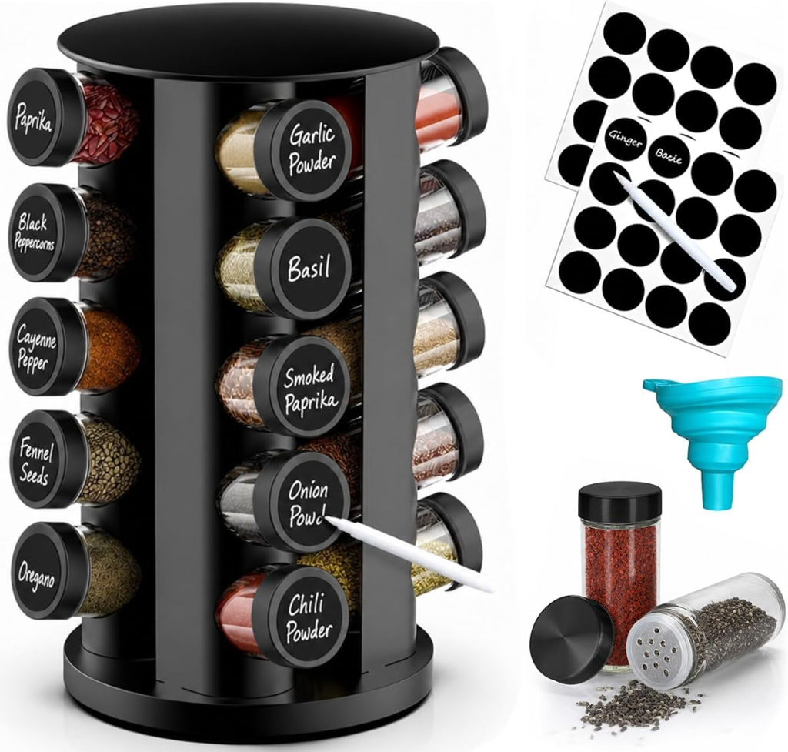

You are standing in front of a sizzling skillet, onions are browning quickly, and you need a half-teaspoon of ground cumin right now.
You open the upper cabinet next to the stove, only to be met with a dense wall of mismatched glass bottles, plastic tins, and foil pouches packed five rows deep. You shuffle through the front row, accidentally knock over a jar of cinnamon, and peer into the dark back corner. By the time you finally locate the cumin hidden behind a rarely used jar of poultry seasoning, your garlic has begun to burn.
Sound familiar? Almost every home cook experiences this exact friction. And yet, the standard reaction is usually assuming you simply need a larger spice rack or more cabinet space.
The problem is not a lack of square footage. The problem is that traditional spice storage focuses entirely on how many jars you can fit rather than how quickly you can see and grab what you need. By shifting to a visibility-first mindset—organizing your spices around visibility and access rather than storage capacity—you can transform your spice collection from an obstacle course into an effortless culinary tool.

360° Rotating Countertop Spice Rack Tower (20 Glass Jars with Labels & Shaker Tops)
Solution: This 360-degree rotating revolving spice carousel holds 20 glass jars in a compact vertical footprint, allowing you to spin and grab any seasoning in one second while keeping every label clearly visible at a glance.
- 360-degree smooth revolving carousel provides instant 1-second access
- Compact vertical tower stores 20 jars using minimal countertop space
- Includes 20 reusable chalkboard labels, marker pen, and funnel for easy refilling
The Daily Cooking Friction of Hidden Spices
Unlike canned goods or dry baking flour, spices are dynamic cooking tools. You interact with them while hands are wet, heat is high, and timing matters.
When spices are stored without a clear visibility structure, several predictable frustrations occur:
- The Domino Effect: Reaching for a jar in the back row inevitably knocks down three bottles in front of it.
- Accidental Duplication: Buying a fresh jar of oregano or paprika at the supermarket because you couldn't see the opened one pushed to the back.
- Flavor Neglect: Forgetting you own smoked paprika, sumac, or coriander simply because they are buried out of sight.
- Counter Clutter Spillage: Leaving daily salt, pepper, and garlic powder permanently on the countertop because retrieving them from the cabinet is too annoying.
Recognizing that spice chaos is an access problem rather than a space shortage is the key to creating a kitchen that supports your daily cooking habits.
Why Standard Spice Storage Breaks Down
Most kitchen spice setups fail for three specific mechanical reasons:
- Equal-Priority Storage: Storing everyday black pepper and kosher salt side-by-side with ground cloves used twice a year during the holidays.
- Depth Blind Spots: Placing small 4-inch bottles on flat, 11-inch-deep shelves where back rows are completely blocked from view.
- Mismatched Container Heights: Tall specialty grinders obstructing shorter spice tins, hiding product labels completely.
For more architectural tips on organizing challenging cabinet depths, explore our comprehensive guide to the complete guide to kitchen cabinet organization.
The Core Principle: Visibility Over Density
To fix your spice storage once and for all, establish this foundational design rule:
"Frequently used spices should be organized around visibility and access — not just storage capacity."
A storage solution that holds 40 jars in a dense cube is worse than a system that holds 18 jars where every single label is visible in one second. Prioritizing instant visual confirmation eliminates cooking stress.
The 3-Tier Spice Hierarchy
Rather than treating all seasonings equally, divide your spice collection into three functional tiers based on cooking frequency:
| Tier Level | Usage Frequency | Examples | Ideal Location |
|---|---|---|---|
| Tier 1: Daily Workhorses | Daily / Near-Daily | Kosher salt, black pepper, garlic powder, olive oil, chili flakes | Front row, eye-level shelf, top cooktop drawer |
| Tier 2: Recipe Specialties | Weekly / Bi-Weekly | Cumin, oregano, paprika, curry powder, cinnamon, thyme | Tiered shelf riser, pull-out rack, secondary drawer |
| Tier 3: Bulk & Occasional | Monthly / Holiday | Whole nutmeg, cream of tartar, bulk refill bags, bay leaves | Upper pantry shelf, deep cabinet bin |
Tier 1: Daily Workhorse Seasonings
Most households rely on the same 4 to 6 seasonings for 80% of everyday cooking. These are your workhorses.
Give your Tier 1 seasonings zero-friction placement. They should be reachable with a single hand movement without opening latches, shifting jars, or reaching behind other items. A small wooden tray or ceramic dish next to the stove holding salt, a pepper mill, and your favorite daily seasoning blend ensures fast meal prep while keeping counters tidy.
For more strategies on keeping kitchen counters clear while maintaining daily access, see our guide on how to organize small kitchen appliances without losing counter space.
Tier 2: Recipe Specialties & Secondary Flavors
This tier represents the core of your spice rack—typically 12 to 20 jars used for specific dinners, marinades, and baking recipes.
The golden rule for Tier 2 spices is 100% label visibility. Every single jar must have its name facing forward, elevated so that no jar in front obscures the text behind it. Whether you use a stadium-style tiered riser, an angled drawer insert, or a sliding rack, your eyes should be able to scan alphabetical labels in three seconds.
Tier 3: Bulk Backups & Whole Spices
Large refill bags of kosher salt, bulk peppercorns, and seasonal baking spices (like whole cloves or pumpkin pie spice) should never share prime real estate with daily cooking herbs.
Store Tier 3 items in an airtight bin in your pantry or on a higher cabinet shelf. When your active Tier 2 jar runs empty, retrieve the bulk backup to refill it, then return the bulk bag to secondary storage.
Real-Life Spice Setups That Prioritize Access
Depending on your kitchen layout, several proven organizational formats deliver high visibility without consuming excess space:
Option A: Stepped Shelf Risers for Eye-Level Cabinets
A 3-tiered bamboo or acrylic riser elevates each row of spice jars approximately 1.5 inches above the row in front of it. This turns a deep cabinet blind spot into an easy-to-read amphitheater of spices.
Option B: In-Drawer Angled Trays
If you have a shallow drawer next to the cooktop, angled spice inserts lay jars flat with labels tilted upward. Opening the drawer presents your entire spice inventory in a single flat view without risk of bottles tipping over.
Option C: 360° Rotating Countertop Carousel Tower
For small kitchens with limited cabinet shelf depth, a vertical rotating carousel tower takes full advantage of vertical height. Placing a revolving spice carousel beside your prep station (like our top-recommended 20-jar tower featured above) allows you to spin and locate any seasoning in one second without opening a single cabinet door.
For more smart storage ideas to streamline compact kitchens, explore our full collection of kitchen organization ideas.
How to Position Spices Around Cooking Flow
Storage location matters just as much as container layout. Follow the natural physical path of heat and moisture:
- Avoid Immediate Cooktop Steam: Never place delicate ground herbs directly over an unvented boiling stovetop, as steam introduces moisture into jars and causes clumping.
- Protect From Direct Sunlight: UV light and direct window heat degrade essential oils and reduce spice potency. Store herbs in shaded cabinets or opaque/amber glass.
- Keep Within Arm's Reach of Prep: The ideal location is within one step of your primary chopping board and cooking pan.
For ideas on managing under-cabinet and utility zones, check out our favorite under-sink kitchen storage hacks.
Labeling for Instant Recognition
If you choose to decant spices into uniform jars, keep labeling functional:
- Top & Side Labels: If spices live in a drawer, label the jar lids. If they live on a shelf, label the front glass.
- High-Contrast Typography: Choose clean, bold, legible fonts on matte white or black backgrounds so words are readable from 3 feet away.
- Alphabetical or Regional Grouping: Arrange jars alphabetically (A to Z) or by culinary profile (Italian herbs together, Mexican seasonings together, baking spices together) so your hand moves to the right zone automatically.
The 60-Second Spice Cabinet Reset
To keep your spice organization pristine without long cleaning projects, perform this 60-second maintenance check once a month:
✓ Rotate Front to Back: Return any stray Tier 1 daily jars to the front row.
✓ Wipe the Shelf: Brush away loose salt grains or turmeric dust from the riser.
✓ Consolidate Duplicates: If you opened a new paprika jar, pour remaining old stock on top and recycle the duplicate bottle.
✓ Check Expiry & Aroma: If a ground spice has lost its vibrant color and scent, add it to your shopping list to replace.
Cook With Ease, Not Searching
Cooking at home should be a joyful, calming experience—not a frantic search for missing ingredients. When your seasonings are organized around visibility and access rather than raw storage capacity, meal prep becomes smoother, food tastes better, and kitchen frustration disappears.
Categorize your seasonings into clear tiers, elevate your everyday jars so every label is instantly readable, and enjoy the effortless calm of a kitchen that works with you.